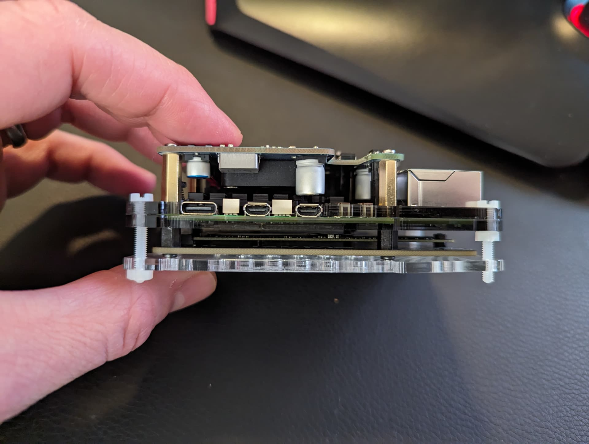
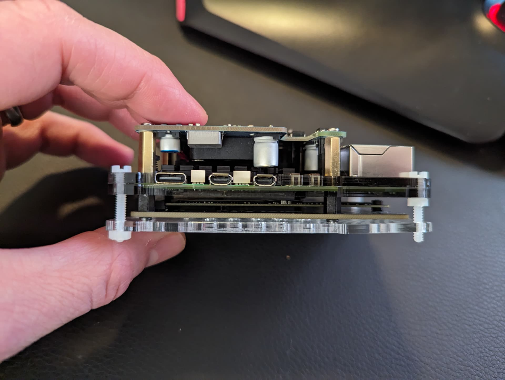
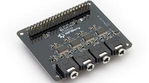
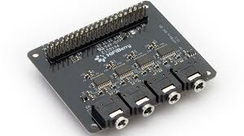

Raspberry Pi 5
The Raspberry Pi 5 introduces unprecedented processing performance and improved I/O speed, enabling desktop-grade computing in an ultra-compact form factor.


The Raspberry Pi 5 introduces unprecedented processing performance and improved I/O speed, enabling desktop-grade computing in an ultra-compact form factor.
The Pi 5 features a Broadcom BCM2712 quad-core ARM Cortex-A76 CPU at 2.4GHz and a VideoCore VII GPU for dual 4K60 displays. RP1 I/O controller integrates USB, PCIe, Ethernet, and HDMI for modern connectivity.


Available in 4GB and 8GB LPDDR4X RAM, Pi 5 supports NVMe SSDs via PCIe 2.0 x1 for ultra-fast storage. MicroSD remains supported for OS testing and quick deployments.


Dual HDMI 2.0 ports, four USB ports (2×3.0 + 2×2.0), Gigabit Ethernet, Wi-Fi 5, and Bluetooth 5.0 offer unmatched versatility. The PCIe FPC connector allows high-speed expansion like NVMe SSDs and external controllers.

Raspberry Pi OS (Bookworm 64-bit) is optimized for performance and stability. Supports Python, C/C++, Node.js, Rust, and other languages. Ubuntu, Manjaro, or IoT-specific distributions can also be installed.

With CPU speeds nearly three times faster than Pi 4, the Pi 5 handles demanding applications. Official active cooling keeps thermals below 60°C under heavy load.
 

The Pi 5’s improved processing power enables TensorFlow Lite and OpenCV to run efficiently on-device. GPIO, I²C, and SPI allow connection to sensors, cameras, and motors for robotics and smart automation projects.

Networking is handled by the RP1 southbridge, providing stable Gigabit Ethernet and Wi-Fi 5 connectivity. Remote control via SSH and VNC comes pre-enabled, and mDNS allows zero-configuration local access.

Dual 4K displays with HDR, HEVC decoding, and OpenGL ES 3.1 support make the Pi 5 a compact yet powerful media player. Kodi, Plex, and VLC run effortlessly, turning this small board into a complete entertainment system.
 

The Pi 5 consumes up to 15 W under full load and works best with a USB-C 5V/5A adapter. Improved power regulation ensures cleaner voltage delivery to peripherals and stable performance.


The refined layout enhances cable management and airflow. New power button, RTC header, and PCIe port make it more user-friendly while retaining the classic 85×56 mm form factor.


Retailing around $60 (4GB) and $80 (8GB), Raspberry Pi 5 brings desktop-class power to makers and professionals. Its unmatched combination of performance, flexibility, and price cements its legacy as the go-to single-board computer.